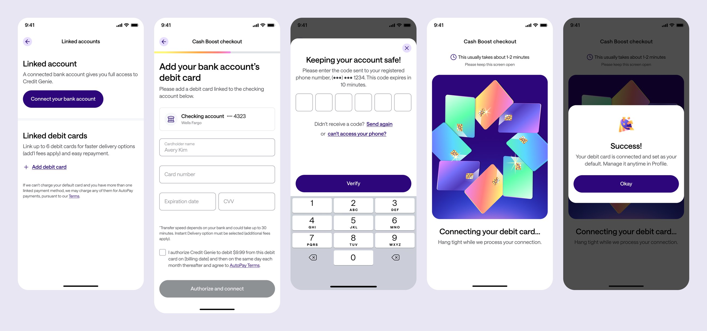
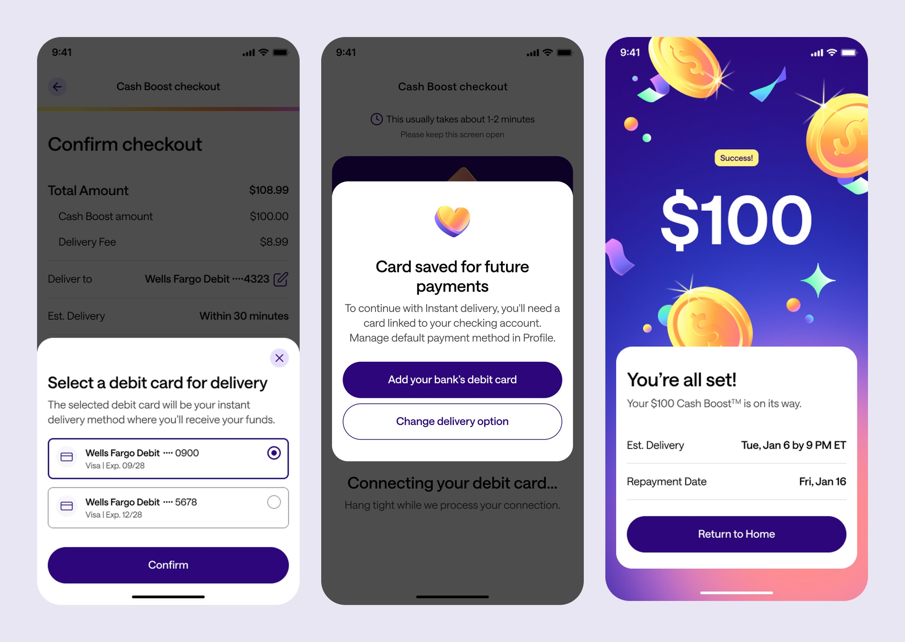
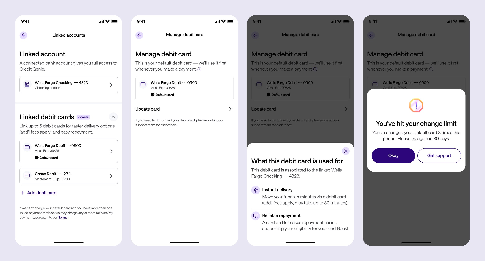
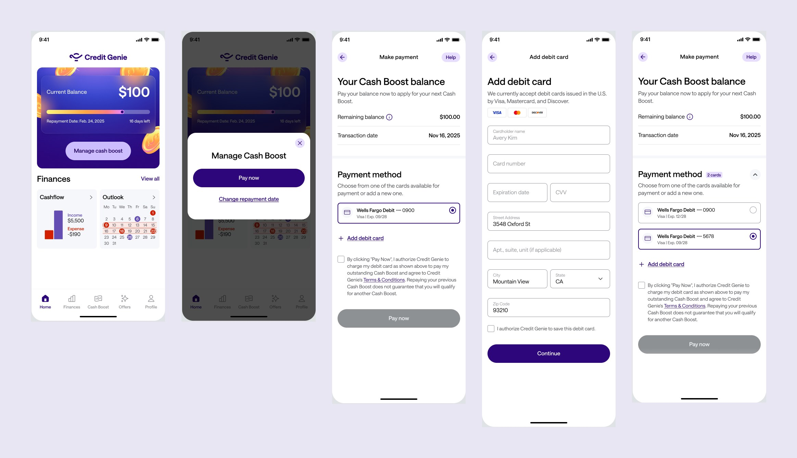
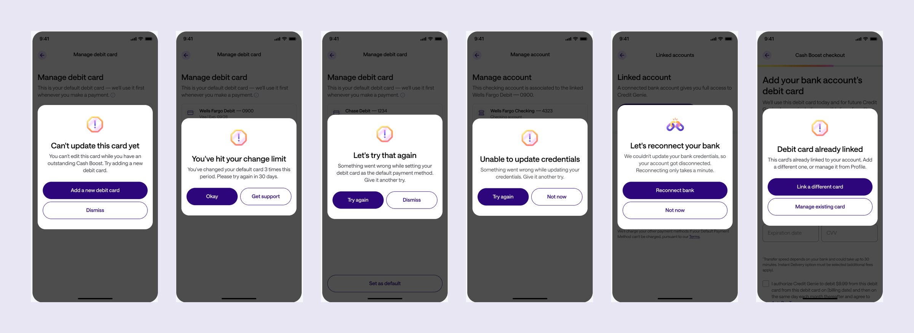

The problem
Members could have only one debit card, and it was automatically removed when their bank disconnected, even if the card still worked. Debit card repayments succeed more often than bank transfers, so we were losing our most reliable payment method right when someone was least likely to repay. Members also couldn't switch cards for receiving an advance or paying one back.
The core idea: what can this card do?
Everything hangs on four statuses. The key split is between delivery (where an advance is sent) and payments (repayments, Pay Now, membership). Delivery stays restricted to well-verified cards while payments stay broad.
| Status | What it passed | Receive advances | Make payments |
|---|---|---|---|
| Verified | Card is tied to the user's bank and confirmed by transactions | Yes | Yes |
| Semi-verified | Card is tied to the bank; transaction match pending | Yes | Yes |
| Payments only | Valid card, but not tied to the linked bank | No | Yes |
| Unverified | Failed checks (for example, prepaid) | No | No |
The same order drives everything: which card is the default, the order cards appear in, and which card we try first when collecting a payment.
Adding a card
Members can add cards during onboarding, from their account, at checkout, or in Pay Now. The address is prefilled from their bank and editable. A new card is never rejected just because a verified card already exists; it's saved as payments-only instead. Every failure screen explains what happened in plain language and offers a next step.

Choosing where the money goes
At advance checkout, members with more than one eligible card choose where to receive it. Members without an eligible card are asked to add one linked to their bank, or, if they're already at six cards, to update one. Updating keeps the old card if the new one fails, and guards against replacing a healthy card while an advance is open.

Default card
The default card is the one we charge first and the one Pay Now preselects. A new card becomes the default only if its status is better. Members can pick any card as default, up to three changes a month. If the default stops working, the next best card takes over automatically.

When the bank disconnects
Instead of deleting cards, a disconnect downgrades them to payments-only. When the member connects a bank again, we re-check those cards and restore them if they match. Expired cards update automatically where possible, with a notification either way.
Pay Now and failures
Pay Now got a card picker with the default preselected, in-flow card entry, and a choice to save a new card or use it once. Disclosures update with the card and payment type. I designed a set of error states that each map to a specific cause, such as wrong CVV, unsupported card, or daily limit reached. Each one leads somewhere useful, and the fallback is never a blank screen.


Results
We're rolling out in stages and tracking card add success, repayment success by card status, and how many members keep a card after their bank disconnects, which was previously zero.